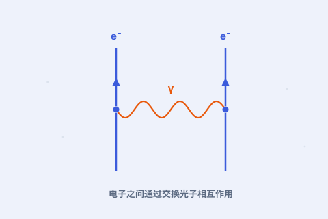

一、难题出在哪
把量子力学和电磁学直接拼在一起，算出来的结果常常是无穷大——这在 1930 年代困住了整整一代理论物理学家。

二、力是“交换粒子”
在量子世界里，相互作用被理解为交换粒子：两个带电粒子之间的电磁力，来自它们不断交换光子。这是 QED 的核心图像。
三、一个决定一切的数
这个交换发生的强度由一个数决定，叫“精细结构常数”，约为 1/137。它越小，计算就越容易收敛——费曼图正是按这个数来“分级”的。
四、准到离谱的验证
QED 对电子磁矩的预言与实验吻合到小数点后十来位，是科学史上被检验得最精确的理论。费曼、施温格、朝永振一郎因此共享 1965 年诺贝尔物理学奖。